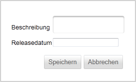
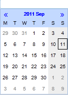

Release anlegen
Um ein neues Release anlegen zu können, müssen Sie eine entsprechende Beschreibung sowie ein Releasedatum angeben.

Indem Sie auf das Eingabefeld für das Releasedatum klicken blendet Ihnen die Anwendung einen Kalender zur Auswahl des gewünschten Releasedatums ein:

Um das Release zu speichern, klicken Sie auf oder um die Eingaben zu verwerfen auf .
Konsistenzbedingungen
Sie müssen darauf achten, dass die Beschreibung weder leer noch nur aus Leerzeichen bestehen darf. Sollte dies dennoch der Fall sein, wird Ihnen die Anwendung bei der Speicherung die folgende Fehlermeldung anzeigen und die Erstellung des Releases unterbinden, bis Sie eine gültige Beschreibung angegeben haben.
Todo Bug514
Created with the Personal Edition of HelpNDoc: Easily create Help documents